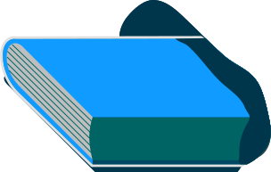

為職業教育發聲——職人
《職人》是臺灣第一本原創社會企業雜誌。以「所有人參與」、「書寫臺灣職人故事」以及「為全臺灣孩子出版」三個方向，讓家長、孩子認識臺灣各專業領域與技職科系的發展。期盼藉由探討教育問題和書寫職場、教育現場故事，改善社會對於學位文憑的迷思；藉由豐富的人物歷程，提供孩子們認識多元專業領域的機會。《職人》希望解開更多人心中的刻板印象，帶領孩子們認識是什麼樣的人用他們的工作及專業，撐起我們所生活的社會。
點擊不同的軌跡查看行動夥伴的故事！
行動軌跡 - Action 1
最一開始，展丞和另外三位都不是傳播相關科系出身的年輕人，創辦了「三峽客」這個媒體。在採訪的過程中和籌辦公司活動時，接觸到一些小朋友。他們發現這些小朋友上了國中後便得放棄自己的興趣來面對考試。於是展丞也開始檢視自己的生命歷程，要怎麼樣把自己念的書、拿到的文憑當作是輔助自己的一門專業，然後把自己的興趣當成職涯發展的主軸？
從開始採訪到做職業認識這件事情之後，他們發現臺灣統計下來有超過兩萬一千多種職業。要求任何一位老師、家長和學生一一去瞭解這些職業，再從中挑一個是不可能的。然而，就因為這件事不可能我們就不去做嗎？於是這幾個年輕人展開了行動，力圖化不可能為可能。
行動軌跡 - Action 2
因為有先前三峽客的經驗，新媒體成為這群人最熟悉的工具。他們開始用最真實的手法，書寫臺灣這群「找到一件生命中熱愛的事情，專心把它做好」的技術型人才，「職人」就此誕生。展丞也提到，職人的定義是從日本來的，命名也有特別挑過，日文的職人就是技術的意思。「沒有天才這件事情，都是練出來的。」關鍵是這些背後的努力和堅持，這就是職人想傳達的精神。
行動軌跡 - Action 3
現在常常會有人主動找上門來，詢問職人有沒有適合的人才可以媒合。另外，正在嘗試摸索、轉換跑道的人也會找他們聊天。展丞說，透過聊天、給些建議，可以讓這些人知道自己在前往的路是有軌跡可循的，讓他們知道自己是有價值的。「技術性領域的人們心情可能會很孤單。因為社會看不到他們，他們自己也看不到未來，會產生非常多的質疑。這時如果我們去採訪他身邊同樣在努力的人，他也會認識到自己的價值。」讓不同需求的人們找到合適的出口，正是現階段「職人」能持續不斷影響他人的方式。
Q：創辦「職人」的過程中，有遇過令人沮喪的時刻嗎？
A：
沒錢啊！職人前前後後花了超過 150 萬，這筆錢對一個 29 歲的男生應該是很好用，但為什麼要為了這件事情背貸款？這個過程中心情是很糾結的。會因為工作排序的問題得罪一些人，也因為財務支配不周，讓自己很累。這些都是很細膩、很複雜的東西，開始想的時候會亂七八糟、天花亂墜。簡單來說一路以來都是挫折，不論怎麼努力的去講，還是有很多人反著方向走。仍然有很多職業歧視、很多看不順眼的討論。但也許人生就是這樣子吧，如果有一件你想做的事情，全世界都會聯合起來反對你 (笑)。但如果我確信我喜歡這件事，全世界都反對我還是會去做，因為這件事情讓你太不爽了。
Q：實地進行了那麼多次採訪，有沒有什麼特別的感想？
A：
有時候挺痛苦的，會知道以前浪費多少時間。以前如果可以多看一點、多學一點就好了。這些所謂的反思會讓我們自己更內斂。會說內斂是因為發現自己不懂的東西真的太多了。不懂的狀況下就不會隨便批評。就像採訪也是，不懂的狀態下就不敢寫，會需要去訪問當事人。面對事實的時候，會比較仔細一點，會知道要先查證再去思考。
Q：「職人」對你自己而言有什麼特別的意義嗎？
A：
當初一直想跟夥伴出來開公司，不只是希望可以賺到錢，也希望可以把共事的夥伴們照顧好、營造快樂的工作氣氛，希望這些人未來都可以在他願意努力的道路上有一番成就。會想這樣做其實和職人的概念不謀而合。我們除了在倡議「職人」精神，也身體力行，希望可以讓所有想做這些事情的人，有一個保護傘，因為環境並不是一間公司可以打造出來的，所以這件事情的意義對我來說沒有誰高誰低，只是先後次序而已。而且先確保可以養活自己，才能去影響別人。
Q：「當你的才華撐不起你的野心，你應該停下來學習。」為何這句話對你而言如此重要？
A：
忘了這句話是誰講的了 (笑)。野心可以說是最終想要達成的目標、想要站的位子。會有野心是因為已經想好自己前行的方向、想做的事情了。當方向確定好後，才華就像是汽油，要有足夠的汽油才能開到目的地。現實情況裡不太可能蒐集完這些汽油才出發，一定是走走停停，累積了多少能量就走多遠，能量不夠的時候停下來找加油站，身上有多少錢就買多少汽油，讓自己再多往前走一點。現在接案還是會遇到自己不會的東西，當客戶問到自已不會的東西時，也會覺得很丟臉啊！但大家都是遇到問題就問，問完就學，學完就會，這句話對每一個正在往自己理想的方向努力前進的人都很受用。

令人沮喪的時刻

為雜誌做採訪的感想

職人對自己的意義

一句重要的話


A：還好吧
A：不睡覺
A：讓自己保持清醒，用任何方式
點擊包包！
A：清道夫
A：你的善良必須有點鋒芒